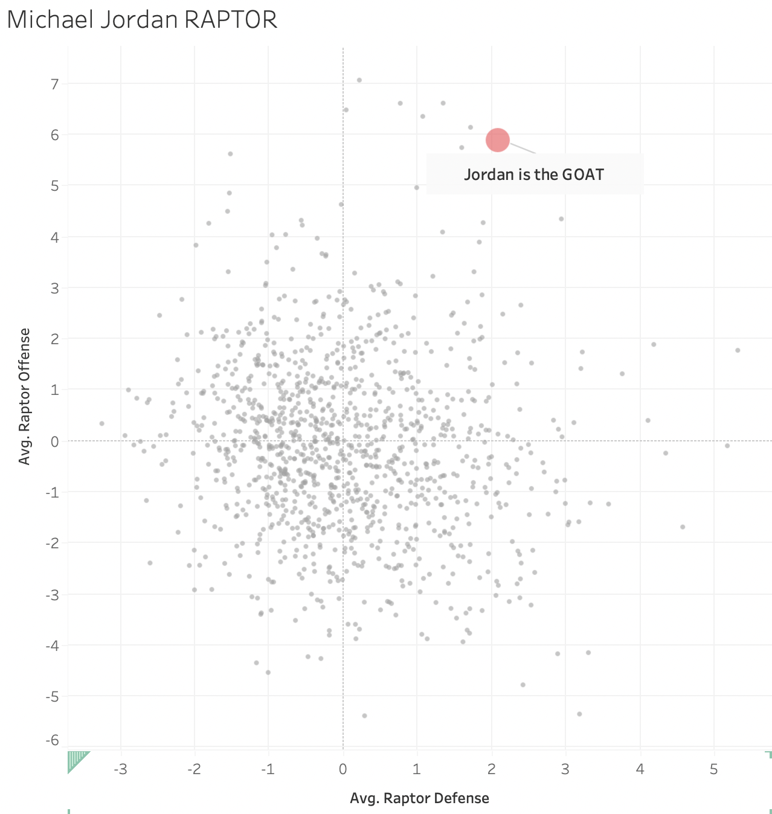

Marks:
- States use areas
- Bar chart uses lines
Channels:
- Horizontal and vertical position:
- Represents attribute of categorical type (states).
- The horizontal and vertical position of states helps users identify them if users are familiar with the map of the USA. The map of the USA is a better mapping than others as it is commonly used. The issue with this mapping, however, lies in the fact that it does not state relevant information about states.
- Color (hue):
- Represents attribute of categorical type (Democrat vs. Republican).
- This is a good mapping as the colors share the same luminance and saturation, but their hues are much different. The stark contrast of these hues allows users to easily identify which party won which state. Also, these are the most commonly associated colors with the two political parties being compared.
- Shape:
- Represents attribute of categorical type (states).
- Similar to the position channel, this channel is used to show the shape of states and the USA. This is a good mapping as it is often used in these scenarios and users should know what it means. It has the drawback that it does not provide enough context about the state populations.
- Area:
- Represents attribute of quantitative type (Electoral College votes).
- This is a good mapping as the area covered by the bar chart is proportional to the number of Electoral College votes garnered by each side. The boxes at the bottom show how Maine and Nebraska distribute each Electoral College vote as they split them
Colormap(s):
- Categorical colormap (blue vs. red)
- Represents attributes of categorical type.
- This is a good mapping because the colors are perceptually distant and have roughly the same saturation and value. The saturation does not confuse users.

Marks:
- Batted balls are displayed as points
- Different types of hits (pop-ups, fly balls, line drives, ground balls) are designated via lines.
Channels:
- Horizontal and vertical position:
- Represents attribute of quantitative type.
- The x-axis shows the exit velocity (in mph) of batted balls, and the y-axis shows the launch angle (in degrees) of batted balls. This is a good mapping as it allows users to compare the speed of a ball with its launch angle, and what that means for the resulting hit.
- Color (luminance)
- Represents attribute of quantitative type (LWTS).
- This is a good mapping because it gives differentiability to the chart. The luminance of the data points allows users to understand which points have the strongest (or weakest) value. This mapping struggles as the background is light and that is also how average value points show up. It can be difficult to see these points and understand their meaning.
- Vertical position:
- Represents attribute of categorical type (type of batted ball).
- This is a good mapping as it provides separability to the visualization. It gives users an easy way to understand exactly how different batted balls have performed.
Colormap(s):
- Divergent colormap
- Represents attributes of quantitative type.
- This is a good mapping because it shows the full range of the LWTS on different batted balls. The colors at either end of the spectrum are perceptually different enough for users to be able to tell at a glance what is "good" and what is "bad". The only issue is that the average value is depicted as white and it seems to blend in to the background a bit.

Marks
- Points
Channels
- Color
- Using Red to help MJs dot stand out. Was going to put a picture of his face but wanted to use color.
- This is a good choice, as it makes it clear who the visualization is focused on.
- Position
- This is a scatter plot including every NBA player who played in the last 50 years. The X axis is a players Avg Raptor Defense throughout their career and the Y axis is there Avg Raptor Offense. Each point is positioned on the graph accordingly.
- The positions for this visualizaion were set in stone when I decided to do a scatter plot. This was a good choice :).
- Shape
- Each point on the graph is a different player. Used size as well as color to make MJ stand out
- This was a good choice as with so many players if all the dots were as big as MJs it would be hard to understand.
Colormap(s)
- Categorical ... kinda. Technically to make this visualizion I put MJ in his own group called Goat. Color was then based on if the player was in the group Goat.
- This is a good choice as the red makes MJ standout. The grey points in the background do a good job of showing the landscape but not taking away from the main point.